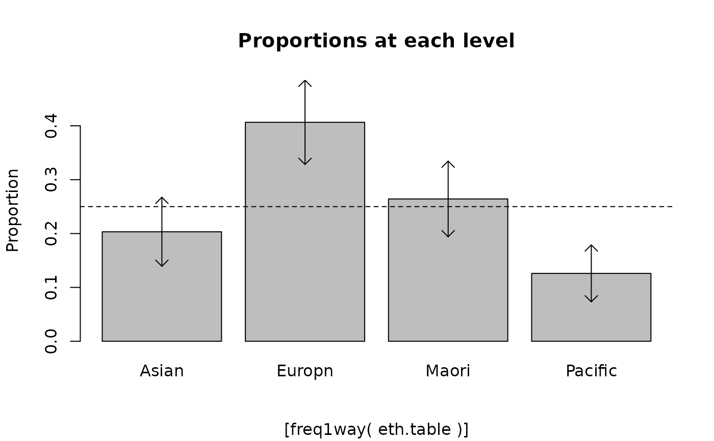
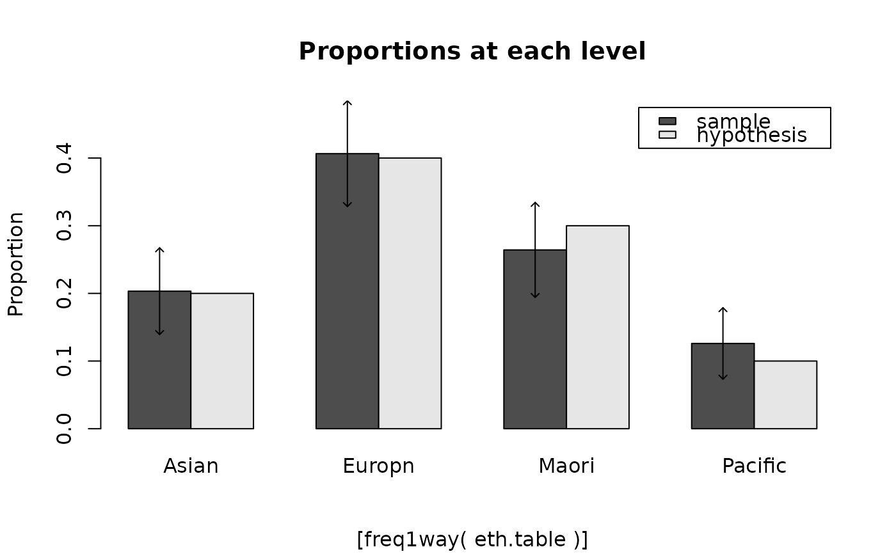

If hypothprob is absent: prints confidence intervals for the true proportions, a Chi-square test for uniformity, confidence intervals for differences in proportions (with no corrections for multiple comparisons), and plots the proportions.
Usage
freq1way(
counts,
hypothprob,
conf.level = 0.95,
addCIs = TRUE,
digits = 4,
arrowwid = 0.1,
estimated = 0
)Arguments
- counts
A 1-way frequency table as produced by
table.- hypothprob
If present, a set of probabilities to test the cell counts against.
- conf.level
confidence level for the confidence interval, expressed as a decimal.
- addCIs
If true, adds confidence limits to plot of sample proportions.
- digits
used to control rounding of printout.
- arrowwid
controls width of arrowheads.
- estimated
default is
0. Subtracted from the df for the Chi-square test.
Value
An invisible list containing the following components:
- CIs
a matrix containing the confidence intervals.
- exp
a vector of the expected counts.
- chi
a vector of the components of Chi-square.
Details
If hypothprob is present: prints confidence intervals for the true proportions, a Chi-square test for the hypothesised probabilities, and plots the sample proportions (with attached confidence limits) alongside the corresponding hypothesised probabilities.
Note
These confidence intervals have been Bonferroni adjusted for multiple comparisons. This is a legacy teaching helper retained for compatibility with older course material.
Deprecated in s20x 3.3.6. It will be removed in a later release.
Examples
##Body image data:
data(body.df)
eth.table = with(body.df, table(ethnicity))
freq1way(eth.table)
#> Warning: freq1way() is deprecated and will be removed from s20x.
#> data: eth.table n = 246
#>
#> Individual (large sample) 95% CIs
#> (adjusted for 4 multiple comparisons)
#> sample prop conf.lower conf.upper
#> Asian 0.203 0.139 0.267
#> Europn 0.407 0.328 0.485
#> Maori 0.264 0.194 0.334
#> Pacific 0.126 0.073 0.179
#>
#> Chi-square test for uniformity
#> X-squared = 41.5772, df = 3, p-value = 4.933e-09
#>

#> 95% CIs for differences in true proportions (rowname-colname)
#> (adjusted for 6 multiple comparisons)
#> Europn Maori Pacific
#> Asian (-0.33,-0.076)* (-0.176,0.054) (-0.018,0.173)
#> Europn (0.007,0.278)* (0.167,0.394)*
#> Maori (0.036,0.241)*
freq1way(eth.table,hypothprob=c(0.2,0.4,0.3,0.1))
#> Warning: freq1way() is deprecated and will be removed from s20x.
#> data: eth.table n = 246
#>
#> Individual (large sample) 95% CIs
#> (adjusted for 4 multiple comparisons)
#> sample prop conf.lower conf.upper hypoth prob
#> Asian 0.203 0.139 0.267 0.2
#> Europn 0.407 0.328 0.485 0.4
#> Maori 0.264 0.194 0.334 0.3
#> Pacific 0.126 0.073 0.179 0.1
#>
#> Chi-square test for hypothesized probabilities
#> X-squared = 2.7534, df = 3, p-value = 0.4312
#>
